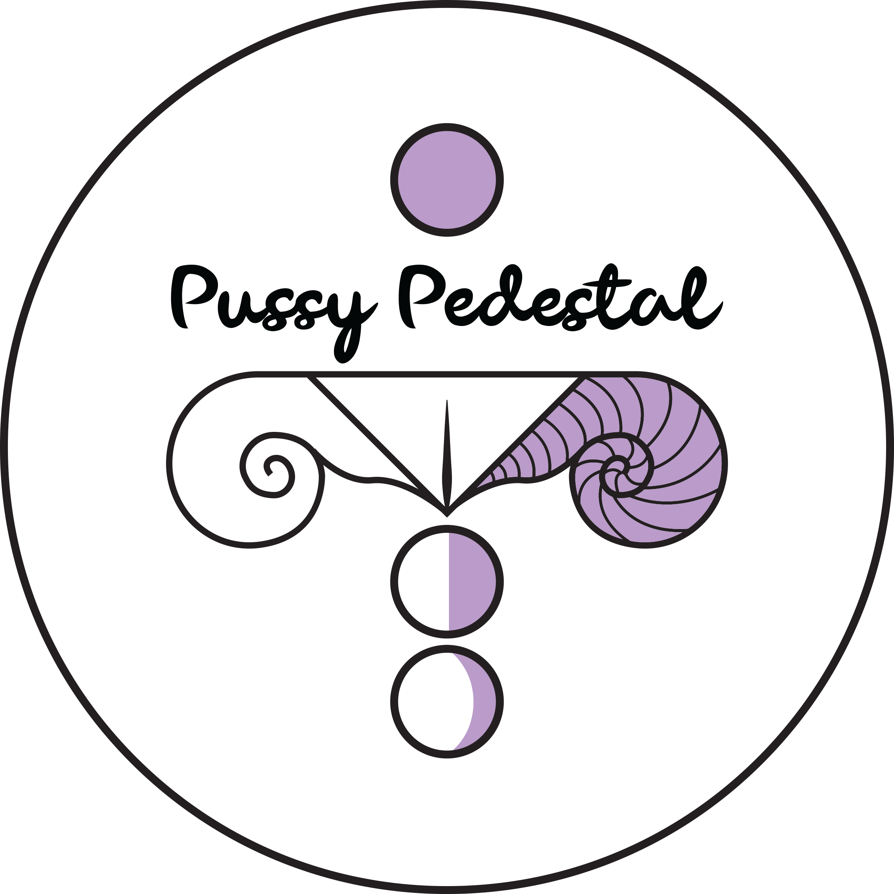
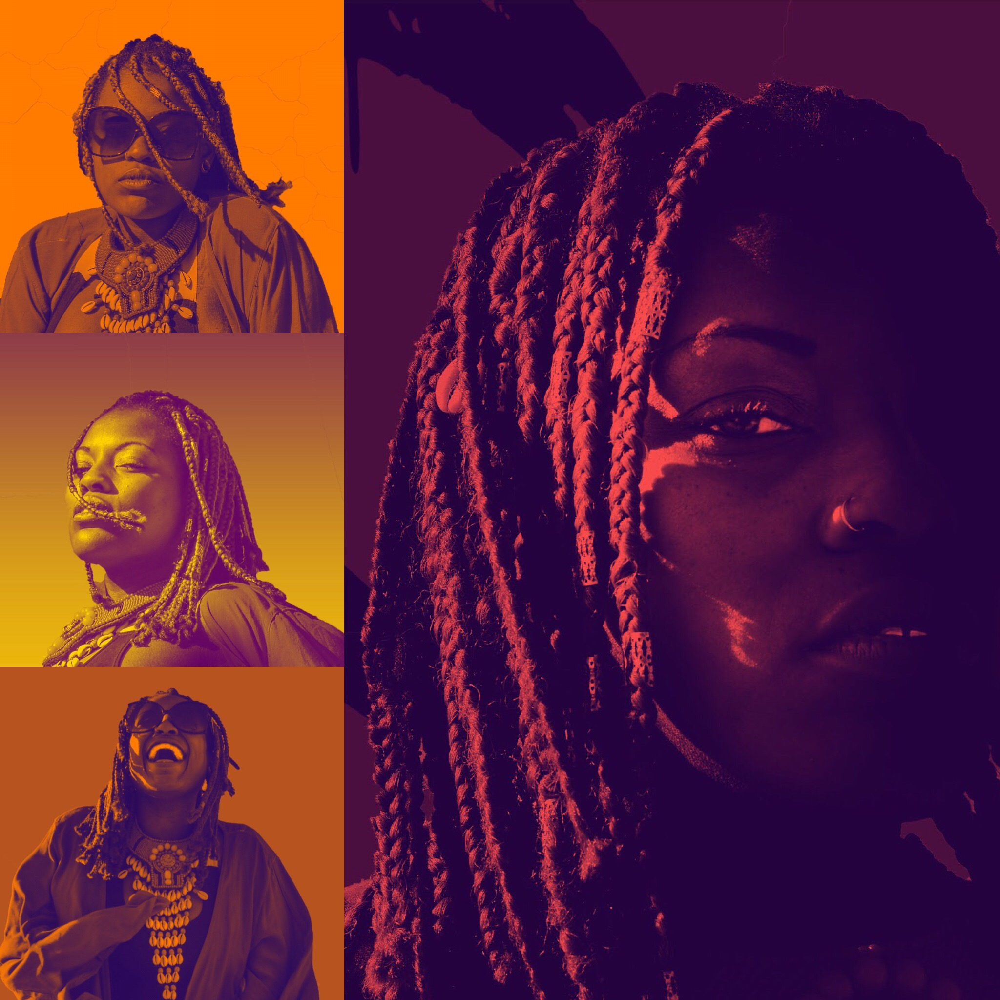
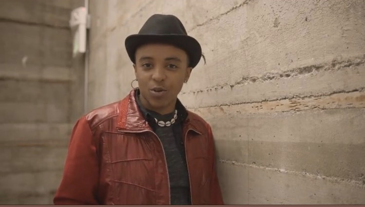
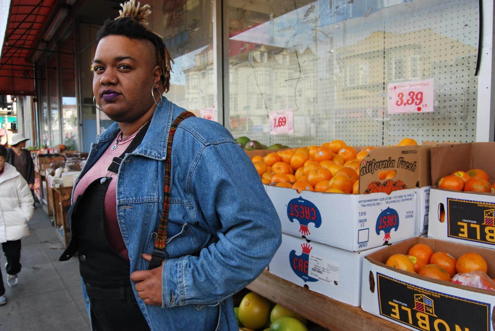
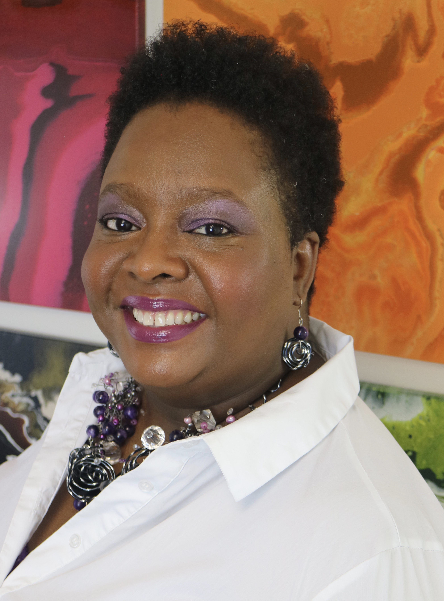

About
We are bringing you Two Performances and a week of workshops, panels and festivities to celebrate PRIDEInPlace. Follow #PRIDEinPlace #PussyPedestal2020 #OaklandPride2020 to keep in touch!
2nd Annual Pussy Pedestal Music Festival

Featuring:
- DJ Kream
- Cadence Myles
- Khalibud
- OHMi Water
- DJ Lady Ryan
Khalibud
 Khalibud is a ball of energy bred in the San Francisco Bay Area. Her lyrics imitate life, serving as an audio diary for her listeners. Khalibud mixes jazz, soul and grassroots hip hop bridging the new with the old. She is amped to bring love and light to the stage. Her latest project “Peace of Imperfection” is available on all platforms.
Cadence Myles
Cadence Myles is an Oakland based live musician. A combination of rock attitude, the soul of R&B, plus the structure of some pop music presents an experience like no other. Usually Cadence plays acoustic guitar and is also a skilled drummer as well as song writer. At this time there are no studio recordings being promoted as Cadence believes live music is the ideal delivery method for this type of medicine.
OHMi Water
OHMi is a creative artist hailing from Covina, CA. She moved to the Bay Area to complete he degree at SF State in Black Studies. she was involved in the movement to save the College of Ethnic Studies. OHMi then realized that she had something to say, and had creative tools to do so. She creates music to affirm and uplift herself, and those around her.
Black Voices Matter - The Poetic Revolution!
Featuring:
- Yodassa Williams
- Nika Cherrelle
- Elaine Brown Poet E Spoken
- Natasha Ria El-Scari
Nika Cherrelle
Elaine Brown (a.k.a. Poet E Spoken)
Elain Brown is a mother, author, writer, teacher, and spoken word artist. She is the Co-host of My Word Open Mic, Poetry Express, and Vent- A safe space and support group for Sexual assault Survivors. Her book Cried Out Laughing and CD Every Knee Part II will be out later this year.
Natasha Ria El-Scari
 Natasha Ria El-Scari is a poet, performer, owner of the El-Scari Harvey Art Gallery, founder of Black Space Black Art, and the author of Screaming Times (Spartan Press, 2015), The Only Other (Main Street Rag, 2016), Mama Sutra–Love and Lovemaking Advice to My Son (2019), I Say, T(He)y Say (2020) and Growing Up Sina (2020). You can find her spoken word albums on all media outlets. Natasha Ria is available for readings, workshops, seminars, speaking engagements, performances, manuscript development, social media content and more. For more info visit www.natasharia.com!
Support the Queer Black Revolution!
- PayPal: Paypal
- Venmo: @PRIDEinPlace
All contributions to PRIDEInPlace will be used to support Black and Cultural Empowerment Movements, Black Owned Businesses and the Artists responsible for bringing this creation to you